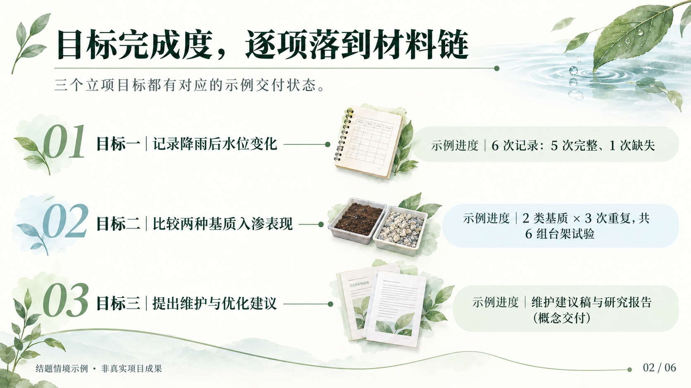
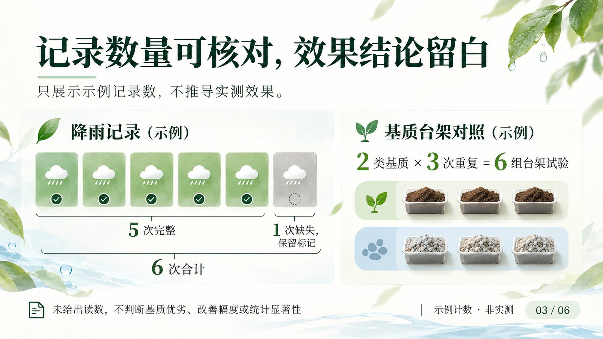
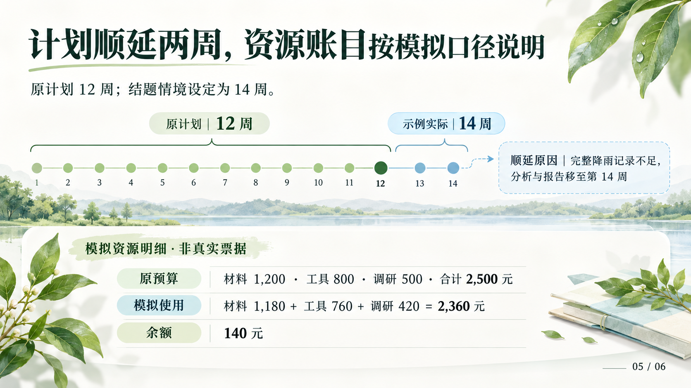
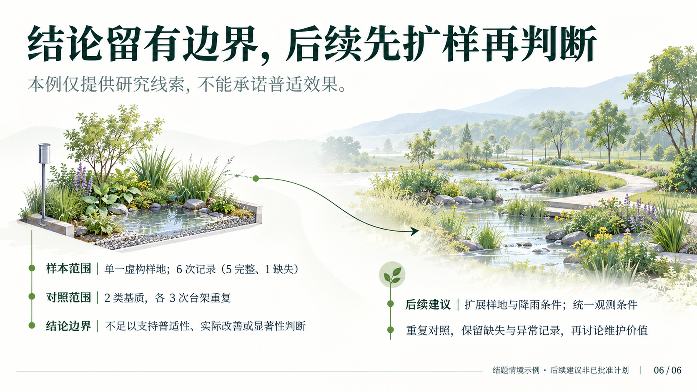

APW / COMPETITION CONCEPTS
大创结题答辩
6页完整故事 · 虚构项目示例
竞赛概念总览
适应页面
原始尺寸 100%
下载整套概念与证据
审阅记录
故事线与资料
雨序
目标完成度，逐项落到材料链
记录数量可核对，效果结论留白
交付物可追溯，贡献按角色说明
计划顺延两周，资源账目按模拟口径说明
结论留有边界，后续先扩样再判断
项目简报
·
逐页内容
·
参考研究
01 / 06 · 雨序
校园雨水花园观察与优化 ·
生成提示词
·
生成记录
02 / 06 · 目标完成度，逐项落到材料链

三个立项目标都有对应的示例交付状态。 ·
生成提示词
·
生成记录
03 / 06 · 记录数量可核对，效果结论留白

只展示示例记录数，不推导实测效果。 ·
生成提示词
·
生成记录
04 / 06 · 交付物可追溯，贡献按角色说明
以空模板与概念封面展示成果结构。 ·
生成提示词
·
生成记录
05 / 06 · 计划顺延两周，资源账目按模拟口径说明

原计划 12 周；结题情境设定为 14 周。 ·
生成提示词
·
生成记录
06 / 06 · 结论留有边界，后续先扩样再判断

本例仅提供研究线索，不能承诺普适效果。 ·
生成提示词
·
生成记录